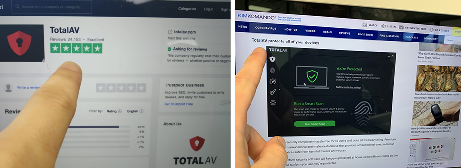

Online threats are evolving and 2020 could be the worst year yet. A new security tool has gone viral across the UK already, here’s why millions of Mac owners are rushing to claim their’s today. Learn More.
If you own a Mac computer and live in the UK, you can protect your Apple device today for free in just a few minutes…
Your Mac computer is a personal storage facility, and it contains all of your most important, precious and private information. The problem is, your device is much easier to access than government or corporate computer systems, making you a prime target for the ever hunting cyber-criminals.
Having any of your private information stolen or posted online would be devastating! But beware, it happens to more people than you might think: on average 1 in 4 people are hacked every day.
Some myths also suggest that Mac computers are immune to viruses or are unpenetrable by hackers however this is unfortunately completely false. In a matter of fact, Mac computers are becoming more of a target for cybercriminals due to this as many are left unprotected. Mac threats actually increased by 400% in 2019 and over double the amount of threats were detected per device on an Apple Mac compared to a Windows computer.
With over 5 billion people connected to the internet worldwide, it’s no surprise that cyber attacks have seen a dramatic increase and are now more common than ever. Hidden Malware can be found in popular Mac programs and emails. Not running regular security scans could pose a significant risk.
The problem is, there aren’t many Mac security applications that will protect you from these dangers for a reasonable price. Until now…
Over 10 million computer owners have taken advantage of this free protection already, TotalAV is all you need to keep your Mac secure. Get it for free today by clicking here.
Thanks to The Kim Komando Show we managed to discover TotalAV, the #1 Rated security product on Trustpilot. Now everyone knows the big names like Norton and McAfee, so when we saw this lesser-known provider ranked #1 with over 10,000 excellent reviews and a 5-star rating we thought we should check it out.
Here’s the deal: TotalAV has partnered up with top-rated developers and are giving away instant virus and malware security scans to all Mac owners for free. As part of a special promotion that sees the renowned software provider, release their most sophisticated protection package yet and announce that they plan to have their protection in every home by the end of 2020.
Sounds too good to be true? We thought so too… We’ve seen millions of consumers right across the UK rush to claim the complete protection plan.
It has been tried and tested, and we must say, without any disappointment.
With TotalAV’s free security tool, you can utilize their advanced algorithm to detect hidden viruses and malicious deceptors in a matter of seconds. Then by activating their real-time protection & secure browsing feature, you can ensure that no single threat can make its way onto your device, ultimately keeping you, and your computer, safe.
Out of 929 computer security products, TotalAV is ranked the #1 provider on Trustpilot, so it’s no surprise millions of Mac users are making the switch. Even Kim Komando herself, America’s Tech Goddess, chooses TotalAV to keep her device protected.

Why Are They Offering It For Free?
Lead Product Manager, David, Explains; “Last year we saw thousands of consumers affected by the sudden increase in Apple Mac and smartphone malware. Our main goal was simple, we wanted to help users protect their personal information, identity, and online banking without fears that their device may be compromised. On top of that, we added the browsing encryption tool to prevent internet providers or snoopers tracking our customers’ online activity.”
He continues, “People already love the most recent system. Our plan is to give as many free scan licenses away so that the product goes viral. We would like to have our protection in every single home by the end of 2020 and we feel good knowing that we’re helping make life more secure for our customers.”
This isn’t the first time that giving away products for almost nothing has been employed, big companies with large marketing budgets are no strangers to the giveaway tactic. Burger King gave away 20,000 free whoppers via Facebook in a similar event in 2013.
What Makes This Protection So Incredible?
TotalAV has a cutting edge algorithm that can detect and remove any viruses, adware, malware, and spyware that may be lying undetected within your Mac. It’s common that hidden threats go undetected until they start to slow down your device, bombard you with advertising or even steal personal information when browsing, shopping or banking online. TotalAV instantly detects any of these unwanted systems and removes them, ensuring your Mac is never at risk.
That’s not all; it also protects you from phishing scams that cloak links in emails to steal your personal data. Privacy protection, real-time security alerts, secure web browsing, virus removal, password manager, even a system tune-up optimizer are all rolled into one in this full Security Suite. TotalAV covers it all.
This software is revolutionizing the way we protect our online devices, and completely automating the process.
The good thing is, it’s super quick and easy to set up and you don’t need to be technical to get started. The process is extremely simple and it only takes a few minutes.
How Can I Claim My Free Copy?
It’s simple. If you have an Apple Mac, you automatically qualify for a free copy. Just follow the steps below, or click here to claim your free copy now. You’ll soon see just how incredible this protection is.
Claiming this promotion is a no-brainer. Check your Mac’s security for free and relax whilst being online knowing your device is safe. Even if you don’t think you are at risk right now, the expiration date of TotalAV’s free scan is unknown, so you might as well take advantage of it whilst you can.
Follow These Simple Steps To Get Your Free Protection Package Today:
Step 1: Select the button below to claim your free copy or click here to visit the official website.
Step 2: Download your TotalAV Free security scan and follow the on screen instructions.
Step 3: Activate your free TotalAV scan and remove any harmful threats or viruses immediately.
Update: TotalAV free security scan is still currently available. The expiration and availability are unknown, however, we are advising readers to claim this today to avoid disappointment. Take advantage of this incredible offer whilst it is still available and relax knowing your computer is protected.